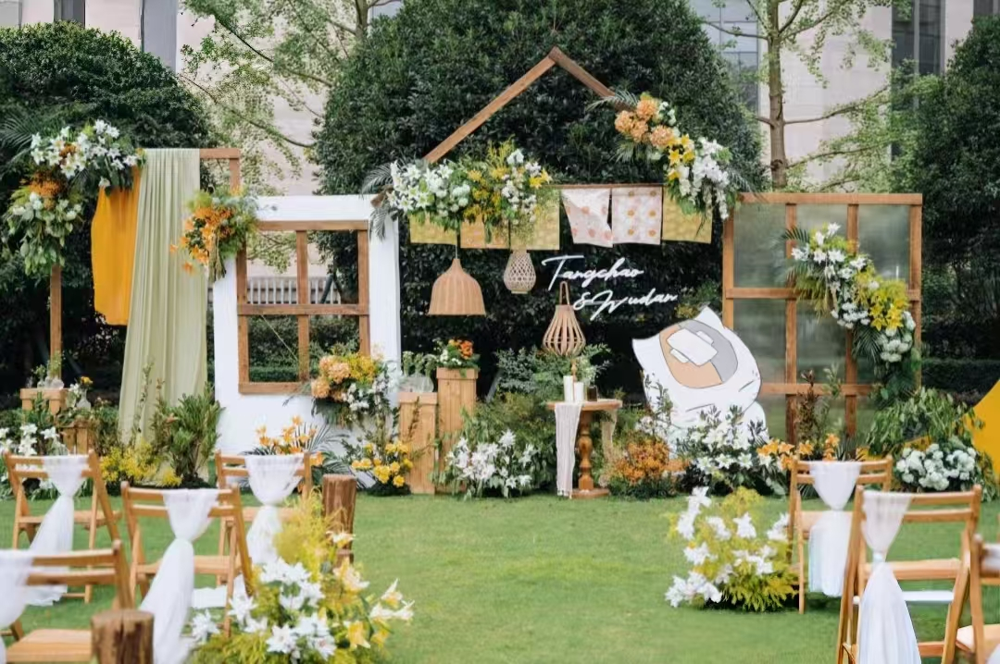
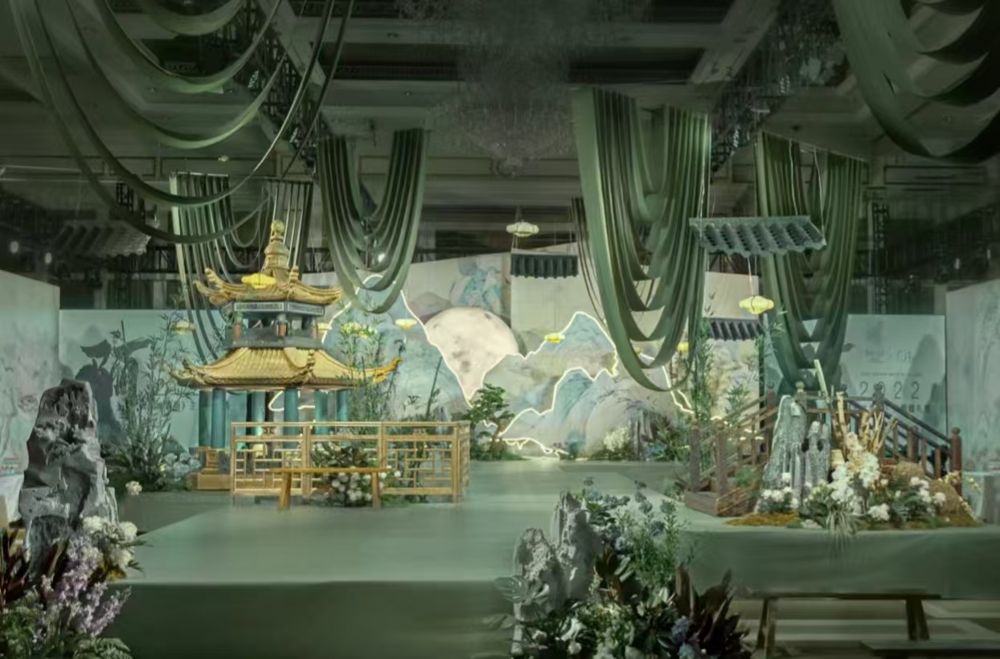
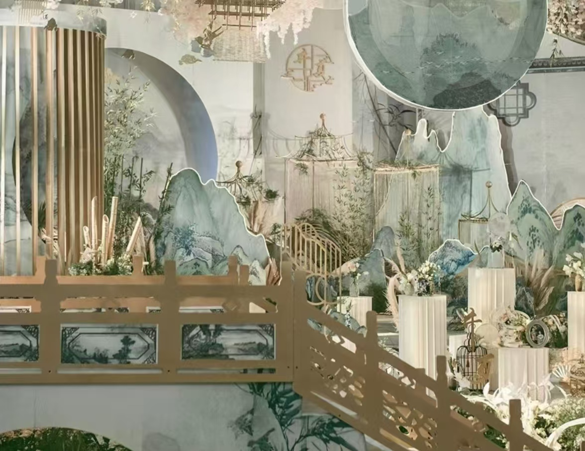
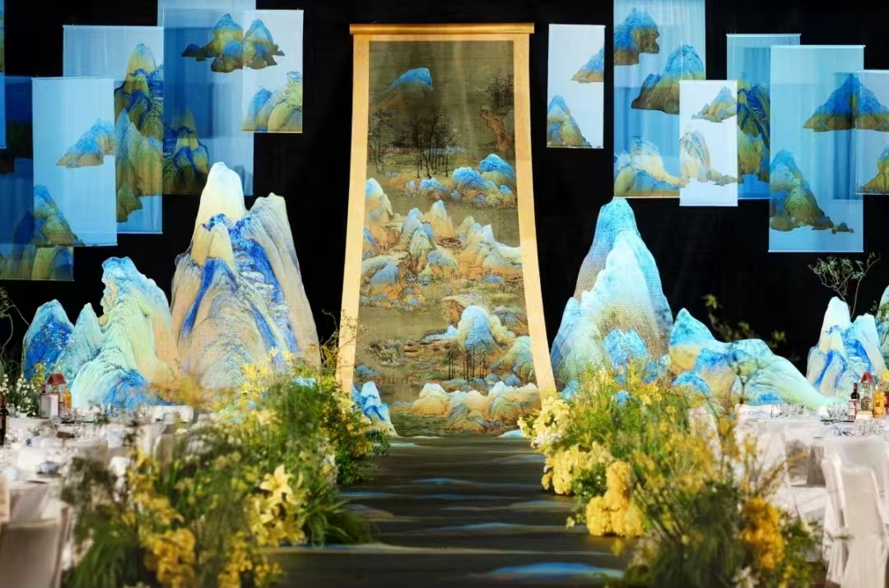
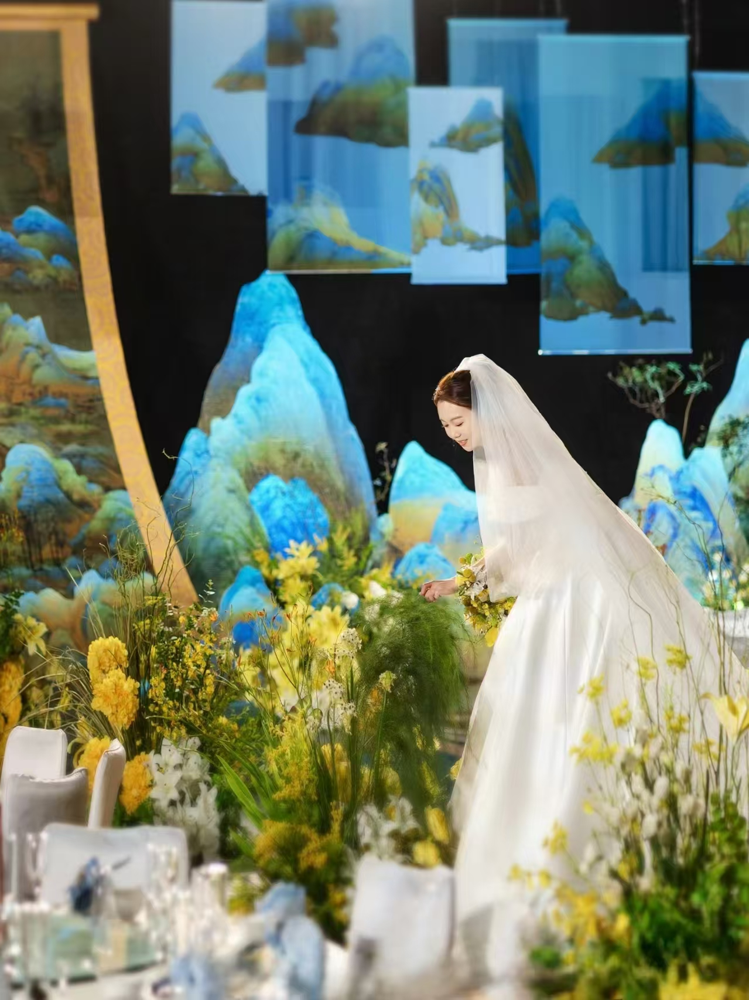

我们回到了那个温柔的夏天
“你帮助了迷路的我，如果能实现，我想带你去看绚丽的山岚，去看秀丽的溪谷。这份心情，人类是如何称呼的呢?”
他们都是温柔的人，她喜欢的也是如夏目般温柔的他，他们希望举办一场让大家都参与进来的婚礼，于是，我们采用园游会的形式，采用夏目友人帐主题。明媚的姜黄色，有趣可爱的卡通动漫布置细节，今天的我乘着时光机打开了这场婚礼的任意门把“你”“我”变成“我们”任意门可以通往一切想去的地方
而我最想去的地方只有你的身边

沉浸式舞台剧婚礼
沉浸式的布景装饰，超有剧场感的舞台设计，打造了一场舞台剧，而新郎新娘就是这剧目的男女主角，丝绒布幔打造梦的舞台，现场在琥珀色灯光下流淌出古典乐，男女主诉说着迎来过往的时光和故事，为宾客上演属于他们的浪漫爱情故事

婚礼灵感:来源于王希孟的《千里江山图》灵动飘逸的笔触创造山峦层叠的画卷，缱绻缠绵，人在画中游。
一个被东方美学征服的婚礼空间
一幅舟行碧波，暮山重叠的水墨画。画面细致入微，烟波浩渺，动静结合，恰到好处。
婚礼配色:只此青绿
青金石与绿松等颜料绘制，明艳如初，砂石的纹理美感无可代替。
时间，空间，过去与未来，在此处相互交叠。天地无边，山水无界，行云流水。